An overview of my projects - most of the descriptions were made
with the assistance of ChatGPT, and source codes are available on my Github.
News recommendation
Reinforcement learning for a personalized
real-time scraped news system
PilotNet implementation
Deep neural network for a lane-following
system predicting the steering angle
Solar panel promotion
Machine Learning model training to predict
and promote solar production
Chess Engine
Minimax algorithm with performance
improvements
Pyspark Random Forest
Comparison of Pyspark's Random Forest model
with other models
Conditional art GAN
Experiments with GANs and Conditional GANs to create artworks from specific artistic currents
PySpark Classification
Project demonstrating the need to
distribute tasks and data in Big Data
Love Letter AI
Negamax algorithm playing the Love Letter
card game
Smart Agent
Development of a smart vacuum able to clean
up a mansion and pick up jewels
ERP Add-On & Misc
Projects done during my 6-month internship
at Luxembourg Online SA
Website for UTBM
Development of a website to centralize UTBM
tools
UI re-design
Remodeling the UI of UTBM's resources
website "Moodle"
Chess Engine
Minimax algorithm with performance improvements using the
UCI protocol
The engine was developed as part of a course on AI at Université du
Québec à Chicoutimi. The aim
was to make an Java engine capable of playing every move in under 1 second, and being
able to communicate with the Universal
Chess Interface protocol to play in a graphical interface. In order to focus on the
algorithm, we used the chesslib
library, providiing us list of legal moves for a position, bitboards, and other useful
tools.
To search the game tree, we implemented Minimax, an algorithm used in
game theory that aims to
minimize the loss or degradation of a game situation. It involves "virtually" evolving a
starting situation and imagining
all possible responses from the opposing player at a given depth (5 for our chess
engine). The best outcome is then
chosen and taken back to the
root, which determines the next move to be made. In the game of chess, the tree of
possibilities grows quickly because of
the many possibilities available each turn. Therefore, much of the work in this area
involves trying to reduce the search
field and optimize the code in order to reduce execution time.
Paired with Minimax, we also used a Quiescence Search to
finish exploring unstable leaf nodes, to help solve the horizon effect. This problem
arises in the complex decision trees
of games like chess or go, where the tree is too wide and deep to explore completely, so
we must limit our exploration.
However, this has the disadvantage of making us blind to responses that we could have
studied in the next iteration.
One way to solve this problem is to detect if a leaf of the tree is "unstable," and
perform additional search to
determine the true value of that leaf. In our case, an unstable leaf is one where the
previous move was a capture.
For these leaves, we perform a quiescence search and further explore the branch,
considering only captures in order to
limit the branching factor. Essentially, if we finish the MiniMax tree exploration with
a capture by a queen, this
additional search ensures that the queen will not be captured immediately by a piece
covering the one we captured.
In order to be able to explore that much under a second, we implemented
numerous optimizations. The
first obvious one is Alpha-Bêta pruning, ensuring that the branches of the tree that do
not improve the player's gain
value are pruned.
Alpha-Bêta pruning relying on comparisons, it is possible to increase
the number of pruned branches
(and therefore improve performance) by evaluating promising positions as early as
possible : this is called Move Ordering.
First, the Most Valuable Victim/Least Valuable Attacker (MVV/LVA) table is used to
analyze capturing moves, which assigns
a value based on the piece that is capturing and the piece that is being captured.
Therefore, if the victim is a Queen,
the value returned will be higher than if the victim is a Pawn. Then, after considering
the victim, we also sort based
on the attacker. It is better to capture a piece with a Pawn than with a Rook, because
often the capturing piece is
endangered. The MVV/LVA table handles capturing moves ordering, while non-capturing
moves are ordered using two heuristics,
the Killer Move and the History Moves. The first one is based on the concept of the
Killer Move, which is a move that
causes pruning. Specifically, if a move threatens a Queen, it will cause significant
pruning in the tree because all moves
that do not move or protect the threatened queen will be eliminated. The second one is
the most effective method for
sorting our non-capturing moves because it takes into account the success of moves in
the past. Each time a non-capturing
move is successful in causing pruning, its value is increased. This simple concept
places moves that have previously caused
cutoffs (and so are likely to do that again) forward.
Another way to reduce the game tree search without pruning is to use
Transposition Tables.
This is an optimization that is not reset between calls to MiniMax. Essentially, if a
position is explored, we store
a representation of this position - called a Zobrist Hash, which allows us to
efficiently store a position and its
information - and the value associated with it. This way, for each position explored
during MiniMax, we check beforehand
if we do not already know the position and therefore its value, thus avoiding costly
exploration.
Finally, we also used three other pruning methods. Futility pruning is
applied when there is a depth
of 3 or less remaining in the search and helps to prune positions that have no
potential. For each depth, a value is
associated, and if the evaluation of the position added to this value is less than alpha
- or if the evaluation of the
position subtracted from this value is greater than beta - we consider that this
position cannot improve the best move :
it can therefore be pruned. Null Move pruning is based on a rather amusing and
humiliating concept : if we play a "blank"
move - that is, we do not play and therefore virtually leave two moves to the opponent -
and the latter still suffers a
significant enough deficit to cause alpha-beta pruning, then we can prune all of this
part of the tree. Delta pruning
is applied only to the Quiescence Search and works roughly the same way as futility
pruning. Delta is given a fixed
value, and if the evaluation of a position to which delta is added does not improve the
best value, we consider that
this branch is not worth exploring. This helps to avoid exploring unnecessary branches
of the tree, which often happens
in the Quiescence Search, which aims to explore all captures.
The other part of exploring the game tree that takes time is to evaluate
each position. To do so
efficiently, we decided to implement a "lazy" evaluation for positions that only needed
an approximation of the exact score,
and to do an in-depth evaluation when an exact score was required. The lazy evaluation
only consists of an evaluation of
the material both sides have.
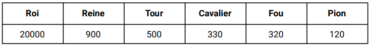
Values given to different pieces based on the "Centipawn"
principle
In order to weight the values associated with the pieces showed above,
we used PSTs (Piece-Square
Tables) for each piece. These are arrays containing 64 entries, one for each square on
the chessboard. For each square,
a value - bonus or penalty - is therefore defined that will be added to the value of the
piece. In order to be as
exhaustive as possible, we used two PSTs per piece, one for the midgame and one for the
endgame. We can therefore see
in the figure opposite, representing the PST of the knight for the midgame, that
positions centered on the chessboard,
which therefore control more squares, are valued, and that positions that are very
off-center are penalized.
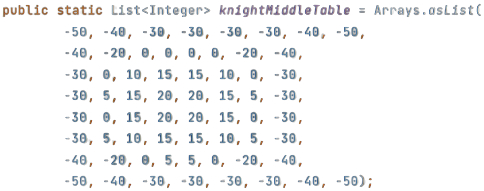
Piece Square Table for the Knight in midgame
To separate positions with the same pieces, we also implemented two
other evaluations to complete the
material one. The first one concerns the position of the pawns : we slightly penalize
doubled pawns, blocked pawns and
isolated pawns. In this way, we do not modify the evaluation enough to influence the
material, but with equal material we
favor more advantageous positions. The other one consists of checking which color
"controls" each square on the
chessboard : if Whites have more pieces that can go to this square, we will consider
that Whites control this square. It
is somewhat a modified Static Exchange Evaluator, which concerns all squares.
Finally, since boards cannot be evaluated the same depending on which
game phase we are in, our
evaluation function was inspired by the principle of Tapered Evaluation, which consists
of modifying the evaluation
according to the progress of the game. We therefore applied weights to the three types
of evaluations that we implement
depending on the phase of the game we are in.
This assignment allowed us to discover the principle of Minimax and its
multiple optimizations,
which are popular for adversarial exploration. Even if we had already implemented it
during our university course,
it was very formative to start from this already known base and push it so that it
reaches its full potential.
We therefore explored several optimization techniques, whether in algorithms or even in
pure programming (moderate
use of loops, numerous rereads of the code to avoid duplicating actions, etc). This
work, complex but rewarding,
pushed us to go beyond the work required to create an engine that we are very proud to
have designed and that
represents a great success for us.
Course :
Artificial Intelligence - Université du Québec à Chicoutimi (2022)
NVIDIA PilotNet implementation
Deep neural network for a lane-following system predicting the steering angle based on NVIDIA's PilotNet paper
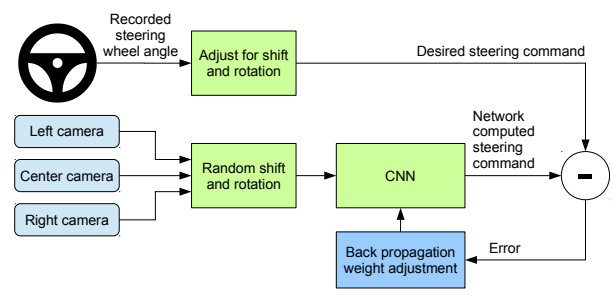
Bla bla
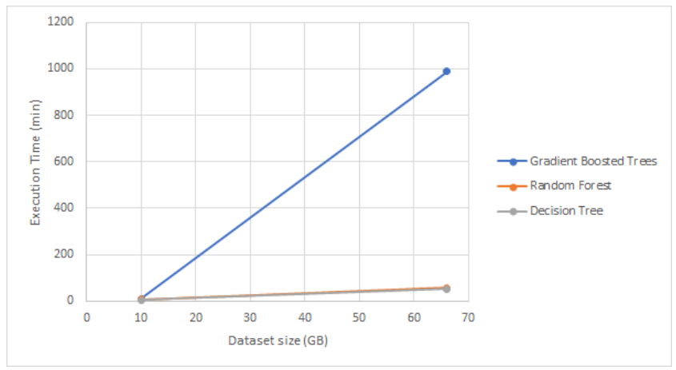
Execution time of the different models in regard to dataset
size
Conclusion.
Technologies & Tools :
Tensorflow, Keras, Python, Google Cloud Platform, Cloud Run
Course :
Deep Learning - Université du Québec à Chicoutimi (2023)
Conditional Deep Convolutional GAN
Experiments with GANs and Conditional GANs to create artworks from specific artistic currents
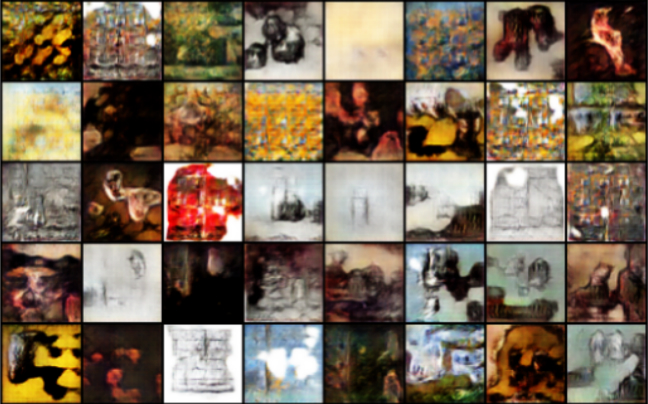
I chose to do this project in the computer vision course while at UQAC mainly because I had
never worked with generative models, but also because they require lots of data and computing power. This
forced me to use cloud computing services and get out of my comfort zone - and step into a more
"realistic" deep learning environment. A more general objective of the project was also to
develop and stick to a methodology, and mine was to take things step by step and gradually increase the
difficulty of the tasks I was attempting.
Although my final goal was to make a conditional Generative Adversarial Network, I started by
"just" developing a GAN from an artwork dataset. I used common architectures of Deep Convolutional GAN
for my generator and discriminator, which are summarized below.
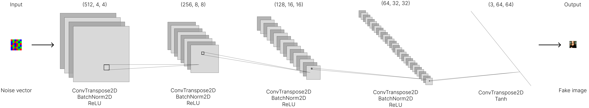
Architecture of the generator
Architecture of the discriminator
This worked fairly well, but the dataset contained very unbalanced
classes, which hindered greatly its ability to generate artworks from different styles. For that reason, I switched
to another bigger dataset, that I found on
Kaggle.
Although it suffered from unbalanced data as well, the least populated classes contained well over 1000 paintings,
which I deemed enough to get decent results. Using the same architecture as described earlier, the training of the
GAN generated this GIF :
I then divided my journey to building a CGAN in three major steps : first, building a CGAN
generating artworks from only two classes with one channel (i.e. a grayscale image), then adding color, and
finally all the classes. Training a CGAN being way longer than training a GAN, this step-by-step process
allowed me to test different configurations while minimizing the wait time between versions.
This strategy allowed me to single out problems with my CGAN implementation, especially one
induced by batch normalization. Given that this process normalizes the activations of a layer on a mini-batch
of inputs, the standardization operation interferes with the storage of conditional information in
normalizing the discriminator entries on the batch. This caused my resulting generated images to be limited to noise,
and did not allow for the discriminator to train. Handling this problem - and others - allowed me to get better
results, and more convincing training processes.
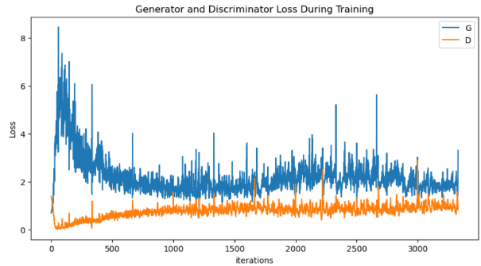
Training curves of the CGAN
However, I still was not satisfied with the conditional information. Although the problems were
probably also caused by insufficient training and too few data, I emphasized the information by scaling it
up as a "fourth" channel using a fully connected layer in the final code to ensure my implementation was not
the problem. The results I obtained were some of the best I got with conditional GANs, but were nowhere near what
I obtained with the basic Generative Adversarial Networks, an example of which you can see at the top of this page.
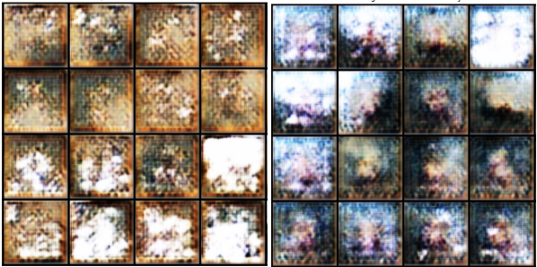
Example of results of the CGAN for the Baroque style (left) and Rococo style (right)
Although this project did not deliver results-wise, it allowed me to get a grip of GANs, and
continued to make myself more comfortable with Deep Learning. Furthermore, the size of the data and model
parameters made me use GPUs and TPUs for the training through services like Google Colab and Kaggle Notebooks,
which was fairly new to me. The fact that training an iteration of the model took over 8 hours also forced me to
really apply my methodology and think ahead before running code, which is something I often overlook, preferring
to try and retry.
Technologies & Tools :
PyTorch, Python, Google Colab, Kaggle Notebook
Course :
Artificial vision and image treatment - Université du Québec à Chicoutimi (2023)
News recommendation system
Reinforcement learning for a personalized news system recommending real-time scraped news
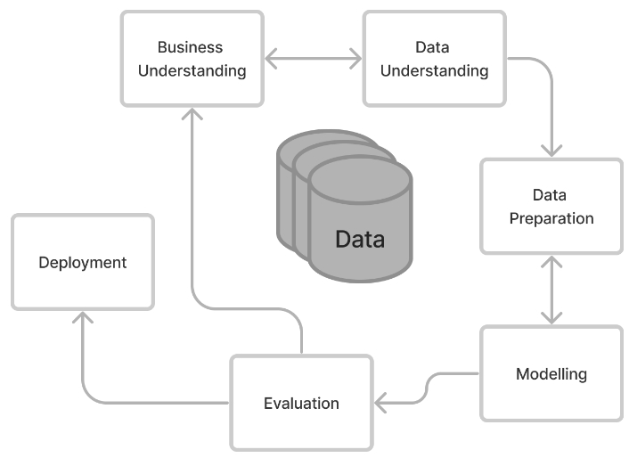
Bla bla
Execution time of the different models in regard to dataset
size
Course :
AI Practical Workshop - Université du Québec à Chicoutimi (2023)
PySpark Distributed Random Forest
Optimization methods for the Random Forest, especially with
significant work on data and on the parallelizations of the algorithm
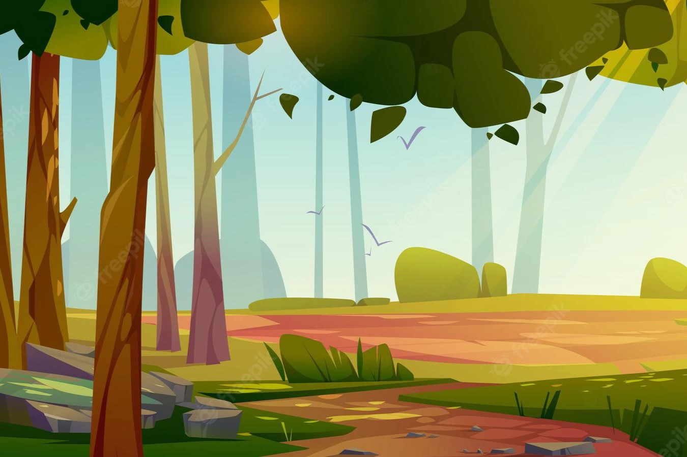
This project was made as part of a course on Machine Learning for Big
Data.
We explored some of the optimization methods applied to the Random Forest algorithm that
were presented in the research
work of Jianguo Chen, Kenli Li, Zhuo Tang, Kashif Bilal, Shui Yu, Chuliang Weng and
Keqin Li, who presented a
parallelized version of the Random Forest in a Spark cloud environment. These
researchers present their work on this
parallelized Random Forest in an article entitled "A Parallel Random Forest Algorithm
for Big Data in a Spark Cloud
Computing Environment", published in October 2018. This project was made to
understand the challenges of machine
learning in a context of Big Data and to present solutions that can address this
problem.
The dataset we used came from Kaggle and can be found with this
link.
It consists of data concerning the NIFTY 100, a well-diversified 100 companies index
reflecting overall market conditions
in India. We chose this dataset not only for its concrete and serious data but also its
size : it is just under 70 GB
with 66 features. The data was not ready for use, so we had to make a couple of
operations on it. First, cleaning it up,
then creating the label our Random Forest was going to predict. We also created weights
to balance the model, as well as
do some dimensionnality reduction with Principal Component Analysis to make the data
easier to use.
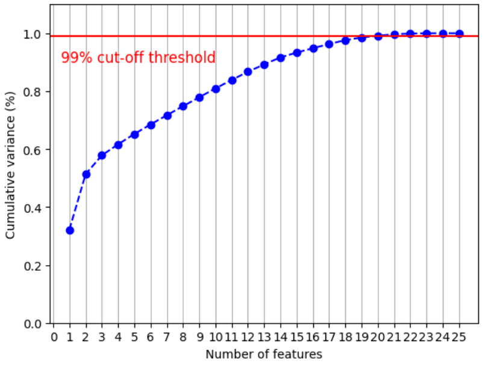
Cumulative variance in regard to the number of features, in order
to keep over 99% of information
To do our tests, we first used a local Spark environment using a machine
with 20 cores, 16GB of
RAM and 3.6GHz. However, we quickly realized it was not enough to handle data this size,
so we used a cloud solution :
Digital Ocean Droplets with 16GB of RAM and 8 AMD vCPUs. With this configuration, we
were able to test different models
on our data, and see the difference between them.
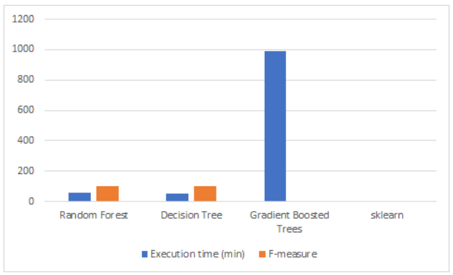
Comparison of the execution time and F-measure of the different
studied models
With this, we were able to come to two conclusions. First, with the
similar execution times of
the Random Forest and the Decision Tree, we were able to demonstrate the power of
parallelization, as the Forest is
made of many single trees - but they still run in about the same time. Secondly, we
tested the pyspark GBTClassifier
model, a model that uses Gradient Boosted Trees. This model, which appeared more
recently than the others, works
according to a simple principle : we train a standard decision tree, then train multiple
models to predict and correct
the error of the first model. Since this model also uses an ensemble of trees and is
supposed to be more performant
than the RandomForestClassifier, we thought it was advisable to try it. However, despite
an execution time of 16h 27m
40s, we were forced to stop it before it finished training. This is due to the fact that
boosting is a
technique that sequentially combines models and does not favor parallelization.
Concerning data parallelization, we also tried running a scikit-learn
model on the data. However,
the transformation of the training dataframe into a Pandas dataframe could not be
executed. Indeed, when performing this
task, we try to retrieve the data distributed on the cluster in order to centralize it
on a core, which is not robust
enough to support such a large amount of data.
Execution time of the different models in regard to dataset
size
This assignment was meant to compare different learning techniques, and
several conclusions were
drawn. First, as seen in the article, parallelization should be applied to both tasks
and data. Our comparison between PySpark and scikit-learn showed the importance of
distributing data when
working with larger scales, as the non-distributed method was simply unable to handle
such large data sets. Second,
we saw the impact of parallelization of calculations in our comparison with Gradient
Boosted Trees. While the Random
Forest, which uses the bagging principle, is easily parallelizable to the point that its
execution time is almost
equal to that of a Decision Tree, the sequential boosting technique is not well suited
(at least in its basic form)
for distribution and therefore for such large data sets. The sequential boosting has a
nearly linear curve and
therefore does not scale well to larger sizes, while the parallelized Random Forest has
a curve that increases very
little and only changes slightly, demonstrating its resistance to scaling. With these
two points in mind, we were able to
conclude that PySpark's distributed system is crucial and that the simplicity and
effectiveness of the Random Forest
allows it to maintain a reasonable timeline.
Course :
Machine Learning for Big Data - Université du Québec à Chicoutimi (2022)
Solar Panel Promotion
Project including budget management and team management
using the Agile method, based on the development of Machine Learning models able to
predict solar panel production on the French territory
Video presentation of the project (auto-generated English
subtitles work !)
This project was made in the Data Science Project course at the
Université de Technologie
de Belfort-Montbéliard. We acted as a mini Scrum Team in a company, managing all aspects
of the project including
human resources, budget, planning, business model, specifications, communication, and
the development process.
Our efforts spanned over a period of 6 months, resulting in the creation of a complete
software application.
As a result of our hard work and dedication, we were given the opportunity to present
our project to a startup incubator.
This idea came about after finding a report from UK Power Networks - an
electricity distribution system
operator covering part of England - following a feed-in tariff scheme introduced by the
UK to encourage electricity
generation using small-scale systems (≤5MW). The associated dataset included over 25
thousand days of collected data in
domestic sites containing solar panels, adding up to over 171 million measurements.
The data wasn't perfect as it contained some missing values making some measurements
unusable, but we still had enough
data after cleaning it to stick with this idea.
Before moving forward, we tested the plausibility of our project to
predict the electrical production
of solar panels from weather data by implementing a simple Linear Regression model and
plotting its predictions.
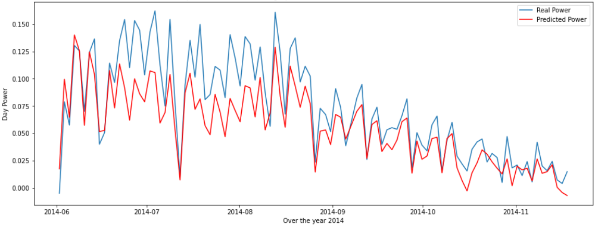
Comparison between average values predicted by a Linear
Regression model and real ones in the test set
Although these results were far from perfect, they were good for a basic
unoptimized model, so
it encouraged us to keep going, having seen the potential of the project. We then tested
12 different models on the
dataset to see which class of models would perform better, and found out that models
based on a Random Forest outperformed
the others.
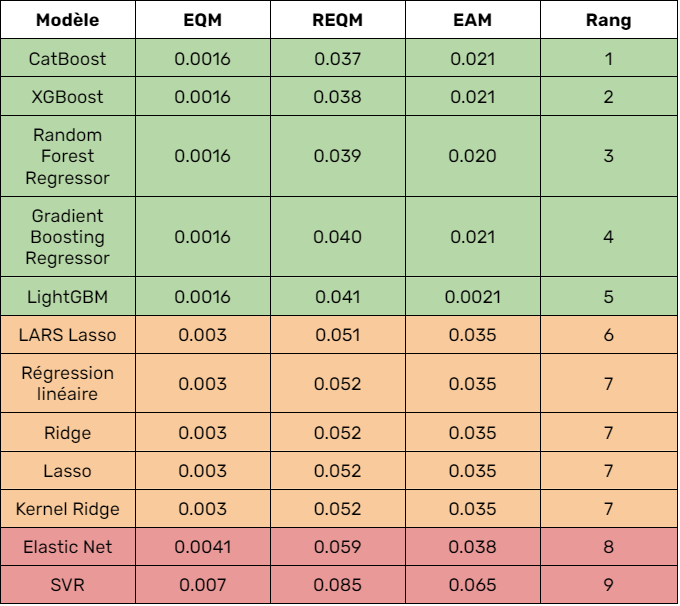
Comparison of the performance of the differest tested models
We then optimized all of the promising models by searching for their
optimal hyperparameters using
grid searches. Finally, we decided to use the CatBoost model as it is the one that
performed with the most consistency,
as our tests using the Root Mean Squared Error showed.
To showcase this model, we build a product around it, focused on France.
We used React and Django
to develop a website aiming to sell our model as a subscription, following the trendy
shift of business models from
product to services. Using weather APIs such as OpenWeather and Solcast and a Leaflet
map, we only require that the
user selects his location on the map to predict the estimated production, financial gain
and other features.
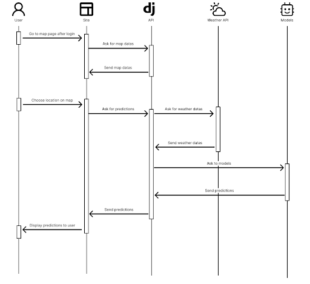
Sequence diagram of the website for a prediction
This project was a very eye-opening experience as it allowed us to
envision the development of a
product, a business model, and more generally, the opportunity to integrate artificial
intelligence into a realistic
setting. Exchanging with non-profit organizations to collect solar panel data and
meeting with a startup incubator and
thinking about taking this project to the next step was an amazing way to get a glimpse
of what being an entrepreneur
requires.
Course :
Data Science Project - Université de Technologie de Belfort-Montbéliard (2022)
Pyspark Distributed Classification
Reproduction of experiments aiming to demonstrate the
scalability of a distributed Decision Tree in Pyspark
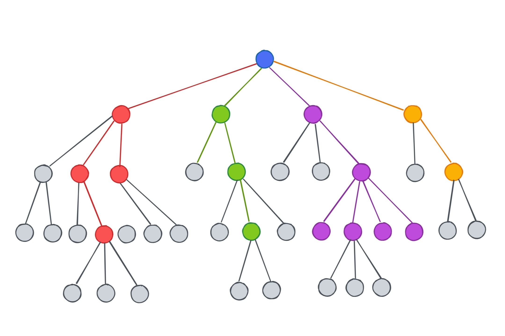
This project is based on the work presented by Vasile Purdil et
Stefan-Gheorghe Pentiuc in their
paper named “MRTree-A Scalable MapReduce Algorithm for Building Decision Trees”,
published in 2014.
The aim of the project was to demonstrate the scalability of the distributed version of
the Decision Tree model,
which I did in a local Spark environment using a machine with 20 cores, 16GB of RAM and
3.6GHz.
The data I used is the same as in the article, it is a dataset
containing unclean data describing
characteristics of persons in order to predict their class of income. It is available
following this
link.
Once the data cleaned,
the dataset contained 14 features and 45222 records, and had a size of about 6 Mo. I
then converted all the values into
numerical ones to create a Resilient Distributed Dataset of LabeledPoints to feed to the
Decision Tree.
To demonstrate the importance of distribution, I needed a bigger dataset
so I scaled it up by duplicating
it up to 50 times. This way, I was able to get the graph below, confirming what the
scientific paper described.
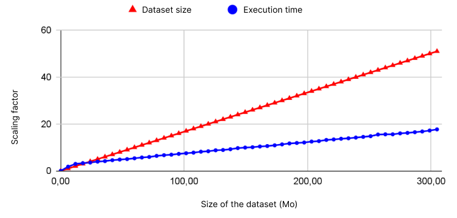
Evolution of the Decision Tree's training time and dataset size
in terms of the scaling factor
I also carried out different tests during this project, like for example
focusing on the variation
of the execution time when changing the number of cores in the local cluster from 4 to
20. As exepected, we can see
that the time decreases with the addition of cores.
This project was a great way to get familiar with PySpark and different
distributed notions,
also comparing them to their scikit-learn equivalents in the process. Re-demonstrating
the improvements put forward
by the article really shows the importance of distribution in Big Data scenarios and was
a first step towards
working in more "realistic" environments, as opposed to working locally on a laptop.
Course :
Machine Learning for Big Data - Université du Québec à Chicoutimi (2022)
Love Letter AI
Implementation of the DFS and MinMax algorithms in order to
develop an Artificial Intelligence able to play the card game "Love Letter"
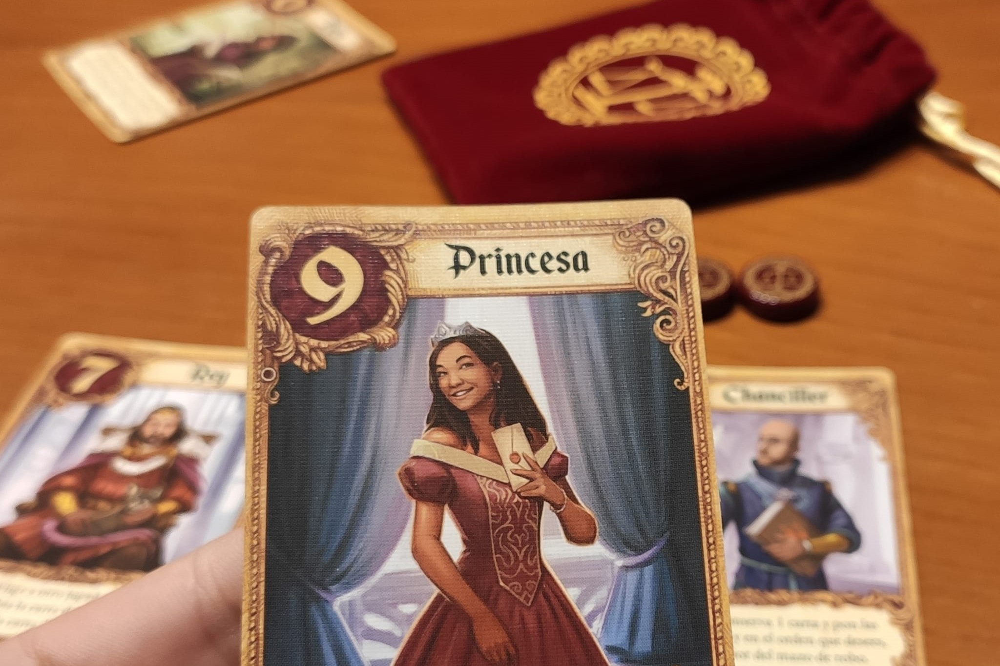
This project was an exciting opportunity to discover the fundamental
concepts of artificial
intelligence and work on algorithms covered in class. We made the choice to work on Love
Letter, a popular
zero sum card game, meaning that the gain of one player is balanced by the loss of the
other player, making
it an ideal candidate for AI development.
The artificial intelligence we set out to develop needed to be able to
act like a player :
Know which cards are on the table (the isolated cards at the beginning of the game
and all the played cards until the moment it needs to make a decision).
Draw and play cards, taking into account all the special cases related to the
abilities of the cards and favoring the situation that will be most advantageous for
it in the future, based on all possible situations.
Generate the game tree by considering all possibilities. In other words, to decide
which card will be the most interesting to keep in hand, it must generate all the
possibilities of cards that the opponent might play and see in which situations it
will have the best results. To do this, it can deduce, based on the cards that have
already been played, the ones that are already on the table, and the ones it has in
its hand, which card the opponent can play and therefore know which situation might
cause it to lose.
To create our AI, we implemented two key algorithms: DFS (depth-first
search) and
Negamax. These algorithms allowed our AI to explore the possible moves in the game and
make decisions based on the likely outcomes. In particular, the Negamax algorithm, a
simplified version of the
MinMax algorithm that is based on the principle of a zero-sum game, allowed us to
efficiently evaluate the potential
value of each move, helping our AI make intelligent decisions even in the face of
uncertainty. The logic behind
the algorithm is simple : player A, who is searching the game tree, will always try to
maximize their moves and
minimize those of their opponent. Although there are not many rounds in a game of Love
Letter (a maximum of 8 rounds),
the Negamax algorithm requires too many calculations to predict all the possible
outcomes of the game in cases where
the players have exhausted the deck and the victory is decided by the highest card. In
order to reduce the number
of states generated by the artificial intelligence - and reduce the time of reflection -
we decided to implement
alpha-beta pruning, which keeps only the promising branches of the tree based on
previously visited nodes.
Although we didn't have time to make an interface for playing the game -
it is only playable in console -
we did make a prototype of what we would've done with more time.
It is accessible with the following link.
Overall, this project was a great learning experience for me. It not
only helped me
solidify my understanding of AI fundamentals, but also sparked my interest in the field
and made me eager to explore more advanced topics in the future. Working on this project
was a challenging and rewarding experience, and I am proud of the AI we developed.
Course :
Introduction to Artificial Intelligence - Université de Technologie de
Belfort-Montbéliard (2020)
Smart Vacuum Agent
Development of a smart vacuum agent living in a mansion,
picking up dust and jewels with intelligent pathing
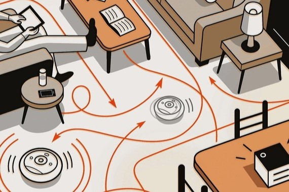
This project was made as part of a course on AI and was done to create
an smart agent with
an internal state based on the Belief-Desire-Intention model, progressing in a updating
environment. Both the
agent and the environment are executed in parallel in two different threads.
The vacuum moves in an environment represented by a two-dimensional map
containing cells,
each of which can contain dust, jewels, or a vacuum. The initial state of the map is
determined by randomly
generating objects based on certain rates, and the map is then updated over time using
different rates. The
environment is partially observable, meaning that the agent's sensors do not give it
access to the state of the
environment at all times. It is also stochastic, meaning that the outcome of an action
is not certain, and episodic,
meaning that it is divided into a sequence of independent episodes. The agent's actions
are limited to moving in one
of four directions or performing no action, and its performance is measured by the
number of steps taken and the
number of objects cleaned up.
The agent is made up of sensors and effectors, as well as an internal
state. The sensors,
represented by the Sensor class, are the interface between the agent and the map. They
provide the agent with
information about the environment, such as the presence of jewels or dust and the
location of the agent on the map.
The effectors, represented by the Effector class, are the actions that the agent can
take on the environment. They
include functions like traveling to a specific location and performing a specific action
on a cell. The internal
state of the agent includes a list of intentions, metrics about its progress, and a copy
of the map. It also has a
boolean value indicating which exploration algorithm to use. The agent's mental state is
based on the
Belief-Desire-Intention model, which means it acts rationally and executes actions that
maximize its performance
based on its perception of the world and its knowledge. The agent's beliefs are based on
the information it
perceives from the environment and its own knowledge, and its desires are its motivation
to act, with the ultimate
goal of cleaning the map of all dust. The agent's intentions are the actions it plans to
take to achieve its goals.
His performance is defined by a formula taking into account the overall cleanness of the
map, the battery used by the
agent and giving penalties for the jewels it vaccumed.
We conducted a series of tests on the agent in order to determine its
optimal learning frequency. The
lower this frequency, it will have an optimized path for the dusts existing at the time
of the creation of the path,
but will miss out on the dusts that have spawned since then, with the environments
running continuously in parallel.
We conducted tests with exploration frequencies ranging from 1 to 5 actions, as well as
an infinite frequency,
in order to measure the importance of this parameter. We recorded the performance of the
system at various intervals
over different periods in order to obtain a representative measurement. We found that an
exploration frequency of 1
resulted in a lot of hesitation on the part of the agent, while higher frequencies
allowed it to be more efficient
in cleaning the map.
The agent uses either the BFS or A* algorithms to search for the next
action to take.
Both algorithms are implemented in the Graph class and involve creating nodes for the
trees and the agent's
intentions, as well as building the solution from the goal node. The BFS algorithm
expands each node by visiting all
of its neighbors before visiting the neighbors of those neighbors, while the A*
algorithm uses a heuristic function
to prioritize nodes that are closer to the goal. Both algorithms also have a test for
the goal and a method for
building the solution from the goal node. The BFS algorithm has a high space complexity
due to the large number of
nodes that it generates, but it has a low time complexity due to its simple expansion
process. The A* algorithm has
a lower space complexity and a higher time complexity due to the more involved expansion
process and use of the
heuristic function.
This project made us create an agent made up of sensors, effectors, and
an internal state,
including a list of intentions and metrics about the agent's progress. The agent's
mental state is based on the
Belief-Desire-Intention model, which means it acts rationally and executes actions that
maximize its performance
based on its perception of the world and its knowledge. The agent uses either the BFS or
A* algorithm to search
for the next action to take.
Technologies & Tools :
C++, CLion
Course :
Artificial Intelligence - Université du Québec à Chicoutimi (2022)
ERP Add-On & Other ERP Projects
These tools were the result of my work during my 6-month
internship as an engineer assistant internship at Luxembourg Online
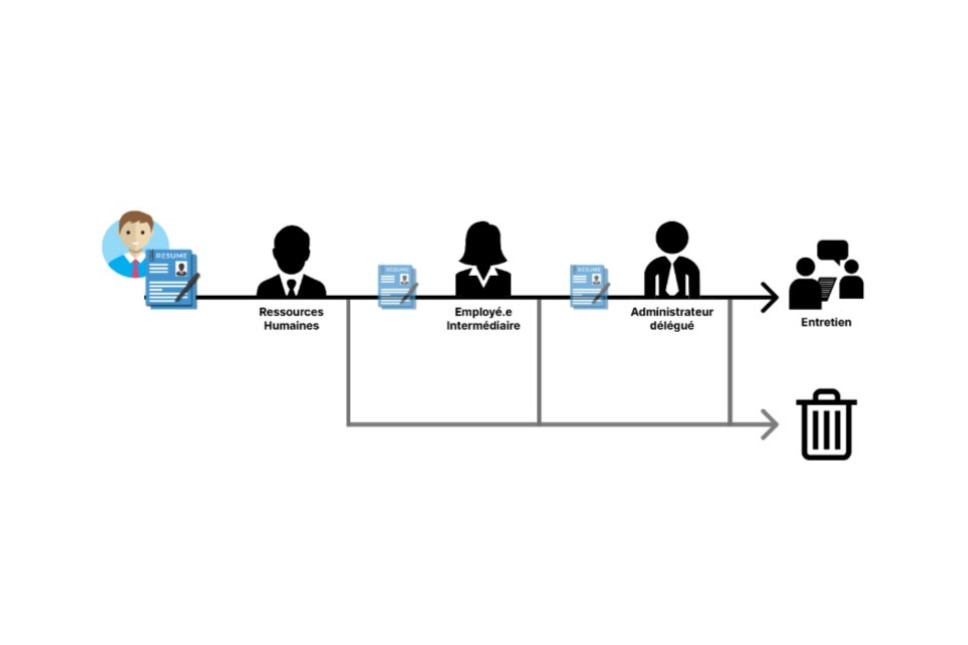
During my fourth year internship at the Université de Technologie de
Belfort-Montbéliard,
I had the opportunity to work at Luxembourg Online, a company located in the Grand Duchy
of Luxembourg.
I joined the software development team at this independent company, which has been a
prominent presence in Luxembourg for
over 25 years. While working on a module for managing recruitment, I solidified my web
development skills
(HTML, JavaScript, CSS, etc.) and also learned Luxembourg Online's proprietary language,
OSL. I also participated
in larger projects, gaining experience and confidence throughout my internship.
My primary task during this internship was developping a tool that would
be added to the ERP to help
with the recruitment process in the company, that lacked structure until then. The
absence of a dedicated tool not
only hindered the efficiency of the process, but also constituted a very time-consuming
task for HR. The main objective
of the recruitment module was the administrative management of applications, and thus to
have not only a global
vision of the applications in progress at a given time, but also a history of
applications. It is essential to
keep a record of applications as it can, for example, allow a candidate to be contacted
again if the position
they applied for is recruiting again.
Another major challenge was to develop a tool that met the needs of
Luxembourg Online's HR while remaining sufficiently general to suit other companies
using Luxembourg Online's ERP.
Although the initial objectives were relatively modest, limited to the simple management
of positions and
applications, they became more ambitious as I became more familiar with the environment.
In fact,
the management of advertisements was later added, then the rating of candidates by
targeted users,
the management of interviews, and finally the addition of an automated email and
notification system.
As the supplement to be developed had no predecessor, the problem in determining the
objectives was not
"how to improve the existing tool", but rather "how to frame the recruitment process
while making it easier for
HR to reduce their workload".
Throughout my internship, I tried to put a focus on modernity and user
interface. I was always allowed
to develop a first version of my module as I saw fit, before reviewing it with my tutor
or a long-time employee,
familiar with the shop and responsible for validating the interfaces of additions to it.
Of course, I was not
given free rein : my module still had to fit in with the rest of the ERP and respect its
graphic charter.
In fact, the shop is a tool that has been in place for many years and I would describe
its interface as "vintage",
which meant I had to create similar elements. Similarly, there are ways of doing things
that are deeply ingrained
in the ERP as they are present in many supplements to which I had to conform, although I
personally considered
them less effective. In addition, one of the reasons I enjoyed web development was the
freedom to do anything -
whether visually with CSS or functionally with JavaScript - but when I had to set up
something that already
existed in the shop, my creativity and contribution were restricted. However, my
constant
proposals of modernization and improvement ideas bore fruit. Indeed, quite quickly -
after a little less than two
months in the company - my tutor considered that my way of seeing and representing
things was innovative and
constructive. I therefore had parallel missions to my module to carry out, such as the
redesign of the company's
agenda, the creation of a drag and drop area for files, or the design of the user
interface of another module.
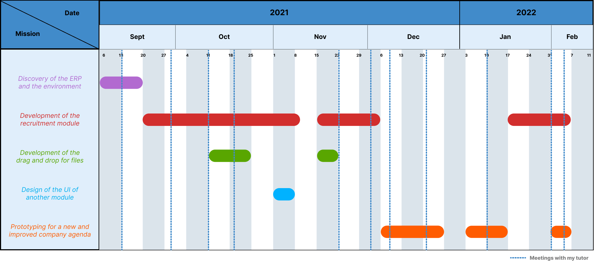
Gantt diagram of my time at Luxembourg Online
I am generally satisfied with the work I have done at Luxembourg Online
and the skills I have acquired.
Over the 23 weeks of my internship, I was able to carry out a project from start to
finish independently, by
defining a specification, working in collaboration with the main users to design a
product that meets their needs,
while ensuring a tool that is sufficiently general to be sold and exploited by any
company.
Concretely, this is a module for the ERP that is fully integrated into the latter and
consists of 4 pages, allowing
the management of applications, as well as open positions, published advertisements, and
platforms receiving these
advertisements.
I also produced a tool that facilitates the download and handling of files within the
ERP, which will be added to the
company's style guide and will therefore be reused in other projects.
Finally, I also designed a prototype to improve a crucial tool used daily in many
services - the company's agenda,
greatly facilitating its use by adding relevant and problem-specific features.
Part of :
6-month internship at Luxembourg Online (2021)
Website for UTBM
Development of a website regrouping and structuring the
different tutorials related to the UTBM tools
The development of a website for UTBM to regroup their different tools
was
a complex and challenging project that required careful planning and attention to
detail.
The aim was to provide assistance and information on various computer services used
within
the educational institution, given a four-month timeframe and the freedom to use any
technologies desired,
with the requirement that the site be maintainable and developable by others in the
future.
The project focused on user interface design, but also required work on the back-end for
the
site to function properly.
After having understood the needs of the future users for this tool, we
defined the architecture
our website was going to have and made a prototype based on the architecture. This
interactive mock-up of the web
platform was designed to demonstrate the simplified functioning of the site to potential
users and was intended
to provide a realistic representation of the final product without requiring actual
development work.
It is accessible with the following link.
Concerning the database design, the initial design for the database
included tables for categories,
articles, and their contents. As the development of the site progressed and we gained
more knowledge, we realized that the
database architecture could be simplified. First, by using a MarkDown text editor for
the descriptions of articles, which
allowed us to eliminate some tables made superfluous. The final design for the database
included tables for categories,
articles, users, media files, settings, and logs, and included an admin user on the
MySQL server.
We made several technical choices in the creation of the site.
We used Figma to create prototypes and design systems, as it is lightweight, fast and
allows for instant collaboration on files.
For the front-end of the site, we considered multiple JavaScript frameworks including
React JS, Angular JS, and Vue JS, as we wanted
a modern, responsive framework that would ensure the website would look great and
function smoothly on a wide range of devices.
Ultimately, we chose React JS due to its ability to create interactive user interfaces,
define simple views for each state of the
application, and update graphical interface data as it changes in the database. We also
used Gatsby JS, a static website generator,
to improve the performance of the website in terms of loading and general functioning.
For the back-end, we used Node.js, particularly the Express framework, and the GraphQL
query language for the
management of data. Finally, we chose MySQL for the database management system.
Throughout the project, we remained focused on achieving our goals and
ensuring that the
new design would be a success. We consistently tracked progress and made adjustments as
needed to ensure that the final product met our high standards. In the end, the designed
website that we
handed over to UTBM was well-received by users. Overall, it was a challenging but
rewarding project that demonstrated
our ability to successfully tackle complex design challenges, as well as making us learn
about the relationships
between the different technologies we used. Finally, it was one of our first insights on
how to organize large
projects, and the time and effort required for project management, task allocation, and
hierarchy in development.
Course :
Development Project - Université de Technologie de Belfort-Montbéliard (2021)
UI re-design
Following a campaign of surveys within both students and
employees of UTBM, re-design of the UI of the online work tool of UTBM "Moodle" to make
it fit with the user needs
Our project to redesign the UI of UTBM's Moodle resources website was a
comprehensive and
thorough process that involved several key steps. It originated from our personal daily
use of Moodle, we found the tool fonctional and well suited for the task, but not it's
User Interface. This is why we focused our approach on user needs, and tried to rethink
the UI around those needs in 4 steps.
The first phase was to create a survey to gather user needs and
preferences - and assure
ourselves everyone felt the need for a new UI - which we distributed to a large number
of users. This allowed us to get a broad range of feedback that would inform the design
process. As expected, a lot of featured features were only used by 25% of users a couple
of times a month.
The second phase was to convene a panel of a dozen different users to
discuss the
results of the survey and provide further input and guidance. This panel was composed of
users with a variety of backgrounds and experience levels, and their insights were
invaluable in shaping the direction of the project.
In the third phase, we created a test version of the new Moodle design,
incorporating
the feedback from the survey and the panel. This allowed us to see how the design would
work in practice and make any necessary adjustments.
Finally, we held another meeting with the panel to discuss the test
version and get
their feedback. Based on their comments and suggestions, we made further refinements to
the design before presenting the final version to UTBM for consideration.
Overall, the project was a resounding success. UTBM was impressed by the
thoroughness
and professionalism of our process, and ultimately decided to implement our revamped
version of Moodle as the official one. We are proud of the work we did and are confident
that the new design will greatly improve the user experience for UTBM students and
faculty.
Technologies & Tools :
Moodle, CSS
Course :
Inter-semester activity - Université de Technologie de Belfort-Montbéliard (2021)